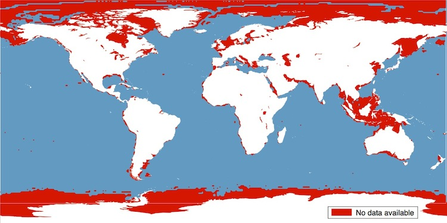

Frequently Asked Questions
Q: Why does the site say "Sorry, we have no data for that ocean area"?
A: The website is built using data from observations only. And like any observations, these are not perfect. We just do not have data from every area in the ocean. This can be seen in the map below, which shows in red the areas where there are not enough surface drifting buoys for our analysis.

Most areas without sufficient coverage are very near the coastlines. But there are also extensive regions in the Arctic, around Antarctica, in the Indonesian Archipelago, the North Sea and some other marginal seas. The reasons for this poor coverage vary from sea ice to piracy, as can be read in this excellent article (paywalled).
Q: Why does my plastic litter stay in the Mediterranean Sea?
A: Again, this is a coverage issue, see also the map above. In the whole 30 years of the drifter project, there has never been a drifting buoy that crossed the Gibraltar Strait. In our transition matrix, the Mediterranean Ocean is therefore completely disconnected from the rest of the global ocean.
Q: What exactly does the scale mean?
A: The scale on the bottom right runs from 0% to 1%. This may sound like a small number, but that is just because the plastic very quickly spreads over a large area. We have max-ed out areas where the plastic concentration is higher than 1%, in order to focus on the spread of the plastic after a few years.
Q: Why can I see only plastic litter for the coming 10 years?
A: The 10 years maximum is a trade-off between more information and faster response times. In principle, we can advect the plastic much longer than 10 years, but it will then take much longer before you see the result. If you really want to see plastic evolution on longer time scales, contact us directly.
Q: Can I export the raw data from the experiment? / Can I have multiple release points?
A: If you want something more 'fancy' than what the site can provide, either download the transit matrix and start analysing it yourself, or contact us. We're happy to help out!
How do we know?
The scientific methods used to calculate the paths of floating debris through our oceans for 10 years after release are quite complicated. It is perhaps best summarised in the video below
Our oceans make up 70 per cent of the Earth's surface and are in constant motion. Driven by the sun and the wind our oceans develop mighty currents and eddies, some of which can take centuries to loop through all of our planet's ocean basins.
These currents also move through three dimensions. Many rise from the deep ocean near coastlines while other currents descend to the deepest parts of the ocean. These vertically descending currents are often, but not always, in the middle of the ocean in regions known as the five great gyres. These gyres are giant vortices spanning the whole ocean basin where water at the surface slowly spirals inwards until it sinks.
However, almost all plastic materials and lighter than water objects (such as those messages in a bottles) stay on the surface.
Since the late 1970s, ocean scientists have tracked drifting buoys but it wasn't until 1982 the World Climate Research Programme put forward the idea of a standardised global array of drifting buoys. These buoys float with the currents just like plastics except - like Twitter from the sea - they send a short message to scientists every six hours about where they are and the conditions in that location.
With this information, we have been able to create a statistical model of the surface pathways of our oceans. The Adrift website uses this model and generates an animation of the likely path and destination of floating debris over a ten year period into the future.
For the full details go to Erik Van Sebille's webpage or the paper Origin, dynamics and evolution of ocean garbage patches from observed surface drifters. If you have any further questions you can contact Erik van Sebille
Team members
Dr Erik van Sebille is a physical oceanographer at Utrecht University, who studies the large-scale circulation of the ocean. He is particularly interested in the connection between ocean basins and the processes that determine how much water 'leaks' from one ocean basin into another. These connections are important for global climate and for the pathways of both marine organisms and debris. For more information, see https://www.uu.nl/staff/EvanSebille.

David Fuchs is a solutions architect with more than thirteen years of experience in software ranging from voice over IP to applications of machine learning techniques to large data sets. David brings combined experience in both engineering and science and is currently interested in software applications to large amount of data in general and climate data in particular.
Jack Murray is a software engineer specializing in web application development with experience in writing code for both frontend and backend. Jack helped with the initial implementation of the frontend and backend.
Duckies and Other Plastic
We show you a cute rubber duckie on the map, but the experiment you are doing when you click on the map is actually very sad. You are investigating how plastics move in the ocean.
The plastic litter is one of the biggest problems in our ocean. It can entangle marine animals, or they can mistake it for food and eat it. If that happens, the plastic gets into the food-chain, and in particular the chemicals in the plastics can be very harmful.
Fortunately, there are many groups of people that want to do something about this problem. They for instance clean up beaches, or try to reduce the amount of plastics we use in our daily lives. So, if you want to help out yourself, why not contact one of the organisations below?
5 Gyres, Tangaroa Blue, Surfrider Foundation, or Plastic Oceans
If you want to know more about plastics in the ocean, go to our website plastinography.org.
Download data
You can download the data of the experiment on the screen via the link below.
The data is a comma-separated file that should load into Excel. It has five columns: the year, the month, the latitude, the longitude and the weight. Each row in the file corresponds to one grid point on the map, and rows with the same year and month data are shown as one snapshot in the animation. The sum of weights for a given year and month is always 1, except for that grid cells where the weight is smaller than 0.00025 are not listed.
You are welcome and free to use the data in the file above for your scientific work. I just ask that you cite this scientific article in any publications that use the data. Both the data and the paper are licensed under a Creative Commons Attribution license. Map tiles by Stamen Design, under CC BY 3.0. Data by OpenStreetMap, under CC BY SA.
If you have any questions on how to use the data, please contact me.